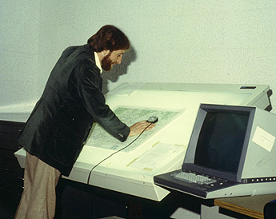

GIS Data Sharing
Who am I?
Jerry Yuan
Ph.D in Geography (2008)
Master in GIS & Remote Sensing (2001)
Bachelor in Environmental Geography and minor in Computer Science (1998)
16+ years' experience in GIS
GIS Data: the Soul of GIS

Acquiring GIS data is very expensive!
Why don't we share GIS Data?
Sharing GIS data is always good
Sharing GIS data is always good
Sharing GIS data can help you make money
Sharing GIS data within an organization or among organizations
Sharing GIS data with the public

GIS data sharing organizations in Ontario
- In Ontario, we have OGDE (Ontario Geospatial Data Exchange). York University is a member of OGDE.
- OGDE is a community of organizations that voluntarily share and use digital geographic data about Ontario at no cost.
- OGDE contains the standard licence agreements, a metadata directory and data warehouse.
GIS data sharing organizations in Canada
- GeoGratis created by Natural Resources Canada http://www.geogratis.gc.ca
- Geobase: A federal, provincial and territorial government initiative created by the Canadian Council on Geomatics http://www.geobase.ca
- GeoConnections: http://geodiscover.cgdi.ca
- Atlas of Canada: http://atlas.nrcan.gc.ca